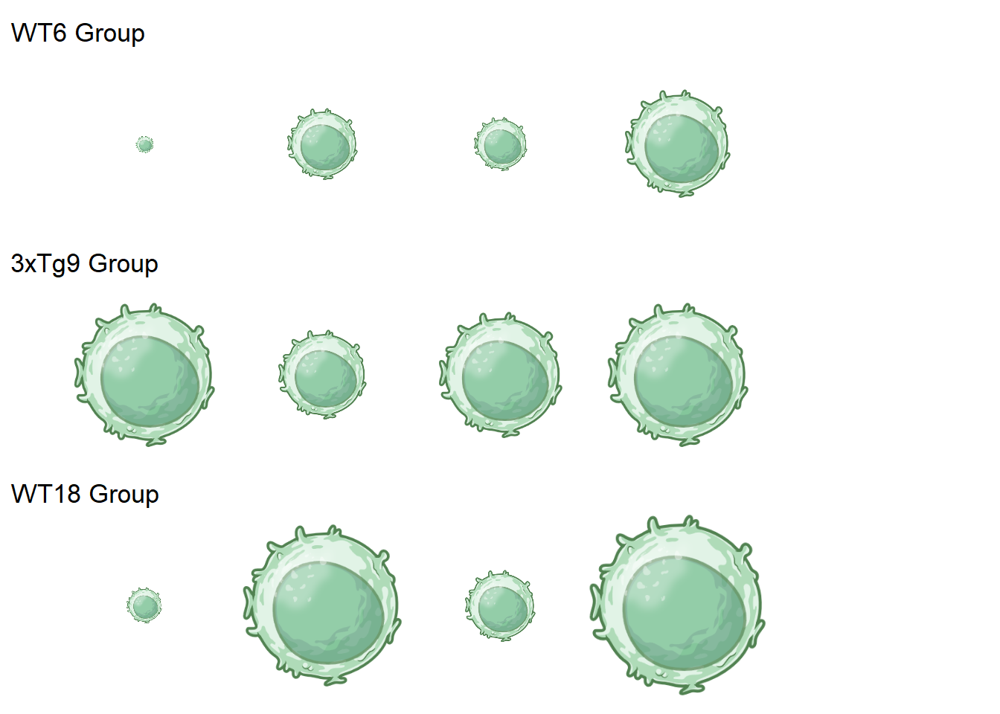
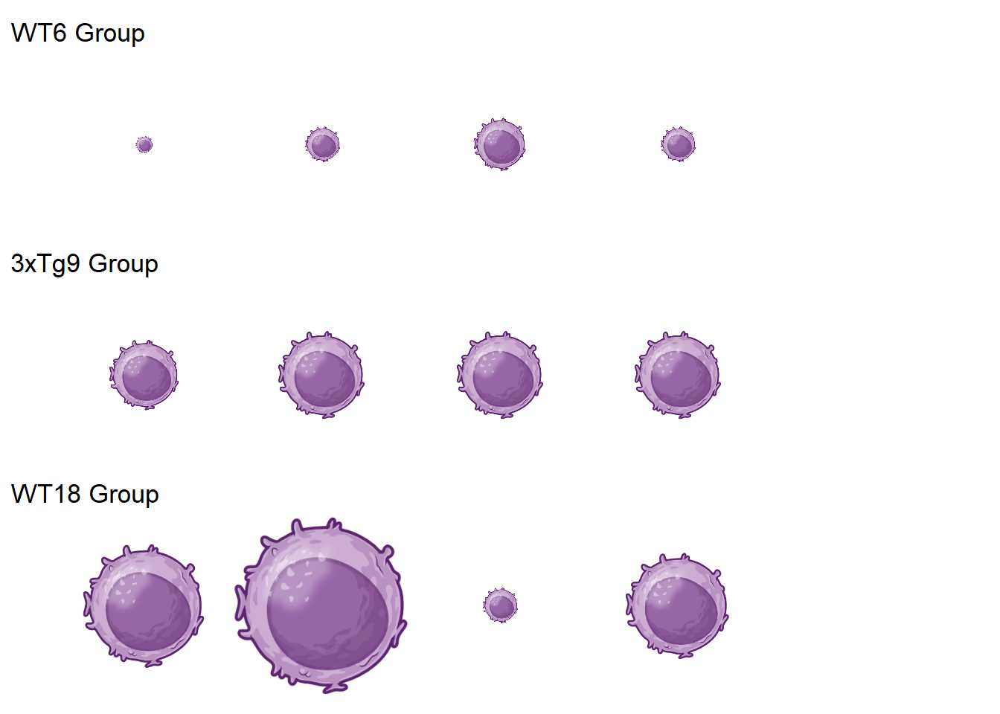

#Narrow the data to just groups of interestcombined_data <-na.omit(combined_data)combined_data <- combined_data %>%filter(!(Group %in%c("2-WT-9", "5-3xTg-18")))#PT2library(scales)
Attaching package: 'scales'
The following object is masked from 'package:readr':
col_factor
#Combine subjects of same group to make one group average amount of each immune cell typeaveraged_data <- combined_data %>%group_by(Group, ZT) %>%summarise(across(where(is.numeric), mean, na.rm =TRUE), .groups ="drop")
Warning: There was 1 warning in `summarise()`.
ℹ In argument: `across(where(is.numeric), mean, na.rm = TRUE)`.
ℹ In group 1: `Group = "1-WT-6"` `ZT = 0`.
Caused by warning:
! The `...` argument of `across()` is deprecated as of dplyr 1.1.0.
Supply arguments directly to `.fns` through an anonymous function instead.
# Previously
across(a:b, mean, na.rm = TRUE)
# Now
across(a:b, \(x) mean(x, na.rm = TRUE))
#Going to change the counts to a scaled number 0.1-1.0 that represents the datamin_size <-0.1# smallest size for visualizationmax_size <-1.0# largest size for visualization# List of columns to rescalecell_count_columns <-c("Meninges Neutrophil Counts","Meninges T-Cell Counts","Meninges CD8+ T Cell Counts","Meninges CD4+ T Cell Counts","Meninges B Cell Counts","Brain Microglia Counts","Brain Neutrophil Counts","Brain T-Cell Counts","Brain CD4+ T Cell Counts","Brain B Cell Counts","Brain CD8+ T Cell Counts")# Rescale specified columnsaveraged_data <- averaged_data %>%mutate(across(all_of(cell_count_columns), ~rescale(., to =c(min_size, max_size))))#PT3library(dplyr)library(tidyr)# Add cell type → icon mappingicon_paths <-tibble(cell_type =c("Meninges Neutrophil Counts","Meninges T-Cell Counts","Meninges CD8+ T Cell Counts","Meninges CD4+ T Cell Counts","Meninges B Cell Counts","Brain Microglia Counts","Brain Neutrophil Counts","Brain T-Cell Counts","Brain CD4+ T Cell Counts","Brain B Cell Counts","Brain CD8+ T Cell Counts" ),icon_path =c("neutrophil.png","tcell.png","cd8tcell.png","cd4tcell.png","bcell.png","microglia.png","neutrophil.png","tcell.png","cd4tcell.png","bcell.png","cd8tcell.png" ))# Pivot the averaged data to long format to map iconslong_averaged <- averaged_data %>%pivot_longer(cols =all_of(cell_count_columns),names_to ="cell_type",values_to ="scaled_size") %>%left_join(icon_paths, by ="cell_type")library(dplyr)library(stringr)#create column for tissue type so that they can be split laterlong_averaged <- long_averaged %>%mutate(tissue_type =case_when(str_detect(cell_type, "Brain") ~"Brain",str_detect(cell_type, "Meninges") ~"Meninges",TRUE~"Other" ))long_averaged <- long_averaged %>%mutate(scaled_size =round(scaled_size, 1)) # Round to 1 decimal place (tenths) to help with visualization# Split the dataframe into two based on tissue_typebrain_averaged <- long_averaged %>%filter(tissue_type =="Brain")meninges_averaged <- long_averaged %>%filter(tissue_type =="Meninges")#split each of these into dataframes for each group# For brain_averagedbrain_WT6 <- brain_averaged %>%filter(Group =="1-WT-6")brain_3xTg9 <- brain_averaged %>%filter(Group =="3-3xTg-9")brain_WT18 <- brain_averaged %>%filter(Group =="4-WT-18")# For meninges_averagedmeninges_WT6 <- meninges_averaged %>%filter(Group =="1-WT-6")meninges_3xTg9 <- meninges_averaged %>%filter(Group =="3-3xTg-9")meninges_WT18 <- meninges_averaged %>%filter(Group =="4-WT-18")
Function to plot prevalence of Immune cell represented by size, chronologically left to right. Can do this for each of the above dataframes by inputting its name and the icon name
# Function to plot icons with scaling and spacingplot_icons <-function(dataframe, icon_image) {# Create the df_icons data frame based on the dataframe input df_icons <-data.frame(x =c(1, 2, 3, 4), y =c(1, 1, 1, 1), image =rep(icon_image, nrow(dataframe)), # Use icon_image inputscaled_size = dataframe$scaled_size # Reference the 'scaled_size' column from the input dataframe )# Plot icons left to right chronologically with scaled size p <-ggplot(df_icons, aes(x = x, y = y)) +geom_image(aes(image = image, size = scaled_size), by ="height") +# Use actual sizes from scaled_size columnscale_size_identity() +# Use actual sizes from scaled_size columntheme_void() +# Remove grid theme(axis.text =element_blank(), axis.ticks =element_blank() ) +coord_cartesian(xlim =c(0.5, 5.5), ylim =c(0.5, 1.5)) # Fixed xlim for a consistent width, so you can stack this and compare to other plots# Print the plotprint(p)}
Example Usage
library(ggplot2) library(ggimage) library(patchwork) # Example usage:# Assuming meninges_WT6_tcell is your dataframe and "tcell.png" is the imagemeninges_WT6_tcell_plot <-plot_icons(meninges_WT6_tcell, "tcell.png")
# Add titles/labels for each plot to specify the groupmeninges_WT6_tcell_plot <- meninges_WT6_tcell_plot +ggtitle("WT6 Group")meninges_3xTg9_tcell_plot <- meninges_3xTg9_tcell_plot +ggtitle("3xTg9 Group")meninges_WT18_tcell_plot <- meninges_WT18_tcell_plot +ggtitle("WT18 Group")# Stack the plots vertically with patchworkcombined_meninges_tcell_plot <- (meninges_WT6_tcell_plot / meninges_3xTg9_tcell_plot / meninges_WT18_tcell_plot)print(combined_meninges_tcell_plot)

#This plot shows the amount of t cells in the meninges, scaled by size of the T cell image, over the course of a day. The left side is the beginning of the day, and the right is the end of the day. This allows me to compare the amount of T cells throughout the day between adult mice, alzheimer's model mice, and aged mice, to see when they may be most disrupted in the models
Another example, for brain CD8 T cells
library(ggplot2) library(ggimage) library(patchwork) # Example usage:# Assuming brain_WT6_cd8tcell, brain_3xTg9_cd8tcell, brain_WT18_cd8tcell are your dataframes and "cd8tcell.png" is the imagebrain_WT6_cd8tcell_plot <-plot_icons(brain_WT6_cd8tcell, "cd8tcell.png")
# Add titles/labels for each plot to specify the groupbrain_WT6_cd8tcell_plot <- brain_WT6_cd8tcell_plot +ggtitle("WT6 Group")brain_3xTg9_cd8tcell_plot <- brain_3xTg9_cd8tcell_plot +ggtitle("3xTg9 Group")brain_WT18_cd8tcell_plot <- brain_WT18_cd8tcell_plot +ggtitle("WT18 Group")# Stack the plots vertically with patchworkcombined_brain_cd8tcell_plot <- (brain_WT6_cd8tcell_plot / brain_3xTg9_cd8tcell_plot / brain_WT18_cd8tcell_plot)# Print the final combined plotprint(combined_brain_cd8tcell_plot)

#This does the same, but for brain CD8+ T cells
This github has image files and all data needed to do this for all of the different cell types as needed